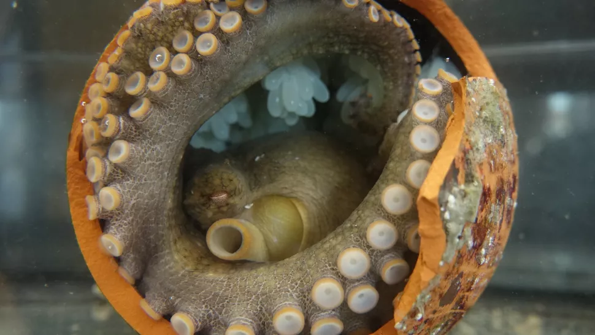
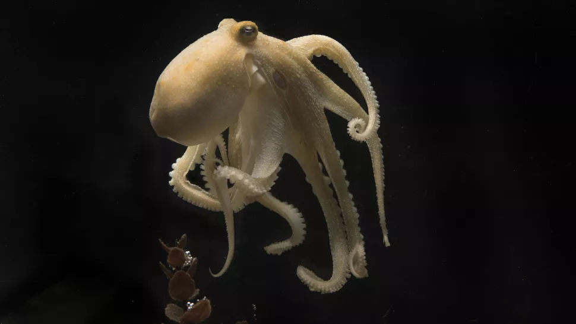
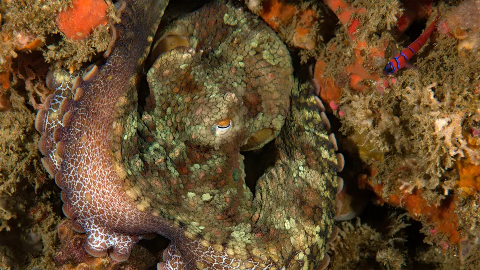

ရေဘဝဲ မျိုးစိတ် အများစုမှာ မိခင်ဟာ ဥအုခါနီးမှာ အစာ ရှာဖွေ စားသောက်မှု မပြုလုပ်တော့ ပါဘူး။
ရေဘဝဲ အမဟာ ဥအု အပြီးမှာတော့ အလွန် ခက်ထန် ကြမ်းတမ်းတဲ့ နည်းလမ်းနဲ့ ကိုယ့်ကိုယ်ကို သတ်သေ သွားကြပါတော့တယ်။
ရေဘဝဲ မိခင်ဟာ ဒီလို သတ်သေတဲ့ နေရာမှာ သူ့ကိုယ်ခန္ဓာကို ကျောက်တုန်း ကျောက်ခဲတွေနဲ့ ရိုက်ခတ်ပြီး ဒါဏ်ရာ အနာတရ ဖြစ်အောင် လုပ်တာ၊ သူ့အရေပြားကို သူ ကိုက်ဖြတ် ပြီး ဒါဏ်ရာ အပြင်းအထန် ရေအောင် ပြုလုပ် တာတွေ အပြင် အချို့ ဖြစ်စဉ်တွေမှာ သူ့ရဲ့ ခြေလက်တွေကို ပြန်လည် ကိုက်ဖြတ် စားသုံး ပစ်တာ အထိ ကြမ်းတမ်းတဲ့ နည်းလမ်းတွေနဲ့ အသက် ဆုံးရှုံးအောင် ပြုလုပ် ကြတယ် ဆိုတာကို ပညာရှင်တွေ လေ့လာ တွေ့ရှိ ခဲ့ကြပါတယ်။
ဒီလို ဖြစ်ရတဲ့ ဖြစ်စဉ်ဟာ သက်ရှိတွေကို လေ့လာတဲ့ သတ္တဗေဒ ပညာရှင် တွေအကြားမှာ အတော်လေး ပဟေဠိ တခု ဖြစ်ခဲ့တာ အတော် ကြာမြင့် ခဲ့ပါပြီ။ ဒီလို ကြမ်းတမ်းတဲ့ အမူအကျင့်တွေ ဖြစ်ပေါ်ရတဲ့ အကြောင်းရင်းနဲ့ ပတ်သက်လို့လဲ ပညာရှင်တွေ အကြားမှာ သီအိုရီ အမျိုးမျိုး တွေးဆခဲ့ ကြပါတယ်။
ပညာရှင် အချို့က ဒီလို ကြမ်းတမ်းတဲ့ အပြုအမူဟာ ရေဘဝဲ ဥတွေကို စားသုံးမယ့် အခြား သတ္တဝါတွေကို အာရုံ ပြောင်းစေတဲ့ လှည့်စားမှု တရပ်လို့ ယူဆ ကြပါတယ်။ အချို့ကလဲ သေဆုံးသွားတဲ့ ရေဘဝဲ မခင်ရဲ့ ကိုယ်ခန္ဓာ ကနေ ရေဘဝဲ သားလောင်းတွေ အတွက် လိုအပ်တဲ့ အဟာရ တွေ ထုတ်ပေးတယ်လို့ ယူဆ ကြပါတယ်။

အခုအခါ သိပ္ပံ ပညာရှင် တွေဟာ ဒီလို ရေဘဝဲ အမ ကိုယ့်ကိုယ်ကို သတ်သေစေတဲ့ အပြုအမူကို ဖြစ်ပေါ်စေတယ်လို့ ယူဆရတဲ့ ဓါတုပစ္စည်း တွေကို ရှာဖွေ တွေ့ရှိ ထားကြပါတယ်။
ရေဘဝဲ အမဟာ ဥအု အပြီးမှာ သူ့ကိုယ်တွင်းက ဟိုမုန်းဓါတ်တွေ အများအပြား ထုတ်လုပ် ပေးတယ် ဆိုတာ ရှာဖွေ တွေ့ရှိ ခဲ့ကြပါတယ်။ ဒီလို ကိုယ်တွင်း ဟိုမုန်းဓါတ် ပြောင်းလဲမှုဟာ ရေဘဝဲ အမကို ဘဝ ဆုံးစေတဲ့ အဓိက အကြောင်းရင်း ဖြစ်တယ်လို့ ပညာရှင် တွေက ယူဆ ကြပါတယ်။
၁၉၇၇ ခုနှစ်မှာ ပြုလုပ်ခဲ့တဲ့ ဘရန်ဒီးစ် တက္ကသိုလ် (Brandeis University) က စိတ်ပညာရှင် ဂျယ်ရမီ ဝိုဒင်စကီ (psychologist Jerome Wodinsky) ရဲ့ သုတေသနအရ ရေဘဝဲ အမရဲ့ မိမိကိုယ်ကို ပြန်လည် ဖျက်ဆီးတဲ့ အပြုအမူဟာ ရေဘဝဲရဲ့ မျက်လုံး အနီးက အမြင် အကျိတ် (optic glands) တွေရဲ့ ထိန်းချုပ်မှုကြောင့် ဖြစ်တယ် ဆိုတာကို ရှာဖွေ တွေ့ရှိ ခဲ့ပါတယ်။ ဒီ ဂလင်း ဟာ လူတွေမှာ ရှိတဲ့ ပစ်ကျူထရီ အကျိတ် (pituitary gland) နဲ့ အလားတူတဲ့ အကျိတ် ဖြစ်ပါတယ်။
ဒီ အကျိတ်တွေကို သွားတဲ့ အာရုံကြော တွေကို ဖြတ်တောက်ပြီး လေ့လာတဲ့ အခါမှာ ရေဘဝဲ မိခင်ဟာ ဥအု ပြီးတာနဲ့ ဥတွေကို ဂရုမစိုက် တော့ပဲ ဝေးရာကို ထွက်ခွာသွားတယ် ဆိုတာ တွေ့ရှိ ခဲ့ပါတယ်။ မိခင်ဟာ ဒီနောက်မှာ အစာ ပြန်လည် စားသောက်ပြီး နောက်ထပ် ၄ လကနေ ၆ လ လောက်ထိ ဆက်လက် အသက်ရှင်သန် ကြတယ် ဆိုတာကိုပါ တွေ့ရှိခဲ့ ကြပါတယ်။
ဒါပေမယ့် ဒီ အမြင်အကျိတ်က မိမိကိုယ်ကို ပြန်ဖျက်ဆီးတဲ့ အပြုအမူကို ဖြစ်ပေါ်အောင် ဘယ်လို ထိန်းချုပ်လဲ ဆိုတာကိုတော့ ရှာဖွေ တွေ့ရှိခြင်း မရှိ ခဲ့ပါဘူး။

သူမ ဦးဆောင်တဲ့ သုတေသန အဖွဲ့ဟာ ရေဘဝဲ အမရဲ့ အမြင်အကျိတ် တွေကို ထုတ်ယူပြီး အရည်ညှစ် ခဲ့ကြပါတယ်။ ဒီလို ညှစ်ပြီး ထွက်လာတဲ့ အရည်ထဲမှာ ပါဝင်တဲ့ ဓါတု ပစ္စည်းတွေကို ဓါတ်ခွဲ စမ်းသပ် ခဲ့ကြတာ ဖြစ်ပါတယ်။
ဝမ် နဲ့ အဖွဲ့ဟာ ဒီ သုတေသန အတွက် အမေရိကန် ပြည်ထောင်စု ကာလီဖိုးနီးယား ပြည်နယ် ကမ်းခြေမှာ နေထိုင် ကျက်စားတဲ့ Octopus bimaculoides ရေဘဝဲ မျိုးစိတ်ကို ရွေးချယ် ခဲ့ကြပါတယ်။ ဒီ ရေဘဝဲ အမတွေ ဥအုပြီး တာနဲ့ သူတို့ရဲ့ အမြင်အကျိတ်ကို ခွဲထုတ် လိုက်ပါတယ်။
ဒီ Octopus bimaculoides ရေဘဝဲကို သုတေသန အတွက် ရွေးချယ်ရတဲ့ အကြောင်းရင်းကတော့ ၂၀၁၈ ခုနှစ်မှာ ပြုလုပ်တဲ့ သုတေသန တခုရဲ့ တွေ့ရှိမှုကြောင့် ဖြစ်ပါတယ်။ ဒီ ၂၀၁၈ သုတေသနမှာ ဒီ ရေဘဝဲ မျိုးစိတ်ရဲ့ အမြင်အကျိတ် တွေကို မျိုးရိုးဗီဇ ဓါတ်ခွဲ စမ်းသပ်မှု ပြုလုပ် ခဲ့ကြတာ ဖြစ်ပါတယ်။
ဒီ ၂၀၁၈ သုတေသန အရ ဒီ ရေဘဝဲ မျိုးစိတ်တွေဟာ ဥအုပြီး ချိန်မှာ စတီးရွိုက် ဟော်မုန်း ထုတ်ပေးတာကို ထိန်းချုပ်တဲ့ မျိုးရိုးဗီဇ gene တွေ ရုတ်တရက် အလုပ် အပြင်းအထန် စ အလုပ် လုပ်ကြတယ် ဆိုတာ ရှာဖွေ တွေ့ရှိ ခဲ့ကြပါတယ်။ ဒီ သုတေသန ရလဒ်ကို အခြေခံပြီး အခု သုတေသနမှာ ဒီ အမြင်အကျိတ်က ထွက်လာတဲ့ ဟော်မုန်းတွေကို ရှာဖွေဖို့ ကြိုးစား ခဲ့တာ ဖြစ်ပါတယ်။
ဝမ် နဲ့ အဖွဲ့ရဲ့ သုတေသန အရ ဒီ ကာလမှာ ဖြစ်ပေါ်တဲ့ ဟော်မုန်း ပြောင်းလဲမှုကို ရှာဖွေ တွေ့ရှိခဲ့ ကြပါတယ်။ ပထမ ပြောင်းလဲ မှုကတော့ မျိုးပွားမှုမှာ ပါဝင်တဲ့ ဟော်မုန်းတွေ ဖြစ်တဲ့ ပရိုဂျက်စတီရုန်း (progesterone) နဲ့ ပရက်ဂနီ နိုလုန်း (pregnenolone) ဟော်မုန်းတွေ ရုတ်တရက် မြင့်တက်လာတာပဲ ဖြစ်ပါတယ်။ ဒီ ဟော်မုန်း နှစ်ခုဟာ လူသားတွေမှာ သားဥ ကြွေချိန်နဲ့ ကိုယ်ဝန်ဆောင် ကာလမှာ မြင့်တက် လာလေ့ ရှိပါတယ်။
ဒုတိယ ဟော်မုန်း ပြောင်းလဲမှု ကတော့ အမြင်အကြိတ် ကနေ 7-DHC ကိုလက်စထရော တွေ အမြောက်အများ ထွက်လာတာပဲ ဖြစ်ပါတယ်။ ဒီ 7-DHC ကိုလက်စထရော ဟာ ဆဲလ် တွေကို အဆိပ်အတောက် ဖြစ်စေ နိုင်ပါတယ်။

ပညာရှင်တွေက ဒီ ဟိုမုန်းတွေနဲ့ ဓါတု ပစ္စည်းတွေဟာ ရေဘဝဲ အမရဲ့ မိမိကိုယ်ကို ပြန်လည် အနာတရ ဖြစ်အောင် ပြုမူပြီး ဖျက်ဆီးမှုကို ဖြစ်ပေါ်စေတဲ့ နေရာမှာ အရေးပါတဲ့ အခန်းကနေ ပါဝင်မယ်လို့ ယူဆ ကြပါတယ်။
အခုထိတော့ ဒီ ဟော်မုန်း တွေကနေ ဘယ်လို လုပ်ပြီး ဒီအပြုအမူတွေ ဖြစ်ပေါ်လာတဲ့ အထိ ဖြစ်ပွားလာစေသလဲ ဆိုတာကိုတော့ သေချာ ရှင်းပြနိုင်ခြင်း မရှိ ကြ သေးပါဘူး။ ဒါပေမယ့် ဒီ အပြုအမူဟာ သိပ္ပံ ပညာရှင် တွေကို အတော်လေး ပဟေဠိ ဖြစ်စေတဲ့ အမူအကျင့် ဖြစ်တာမို့ အဖြေရှာ နိုင်ဖို့ ဆက်လက် ကြိုးပမ်း သွားကြမယ်လို့ သိရပါတယ်။
Ref: Octopuses torture and eat themselves after mating. Science finally knows why. | Live Science